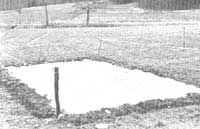

Try and alternative to commercial pesticides and herbicides.
STAFF PHOTO
For those of you who cringe (and rightly so!) at the thought of applying harsh chemicals to the same soil that'll bear your family's yearly harvest of fruits and vegetables, yet who don't want to leave the garden plot vulnerable to a host of wintering-over pathogens or spend your summers fighting a thick carpel of weeds, there may be an effective (and amazingly simple) solution to your problem.
There's a new technique, you see, currently being researched by farmers and gardeners throughout the country-including MOTHER'S own Kerry and Barbara Sullivan-that uses the sun's rays to kill bacteria, fungi, weed seeds, nematodes, and such. The procedure, called solarization, consists of simply soaking the ground with water and then covering the wetted area with 1-to 6-mil clear plastic sheeting. (Naturally, you'll need to weight down the edges to prevent the plastic from blowing away.)
The covering produces a greenhouse effect on the soil, and heats the ground beneath it to temperatures between 100°F and 140°F. After four to six weeks of this solar conditioning, the soil should be cleansed of most weed seeds and pathogens without chemical contamination. What's more, the "pasteurized" earth is-if early studies prove true-actually more productive than ordinary loam.
HOW IT WORKS
There are several perfectly logical explanations for the success claimed by proponents of this method. For one thing, the sunlight shining through plastic heats the topsoil enough either to kill outright or, under less than ideal conditions, to germinate any preexisting weed seeds (or other spores) that might be harmful to new vegetable seedlings. Then, as the unwanted sprouted seeds grow, the shoots are destroyed by the continued high heat.
The reported increases in soil productivity could well result from the anaerobic situation that's created by watering the ground and covering it with airtight plastic sheeting. Any living matter that requires oxygen, then, will die . . . while those organisms not in need of oxygen will thrive and-it has been suggested-speed up the decomposition of any organic matter present in the soil.
A FEW BUGS
Of course, there are possible disadvantages to the solarization process, as well. One obvious drawback is that-by temporarily heating the soil-you might destroy as many beneficial organisms as potential problems (although some researchers feel that the process actually tips the scale in favor of beneficial organisms). And, since the procedure does increase the sterility of the treated soil, folks more inclined toward totally wholistic gardening methods would likely prefer to plant a cover crop as a means of discouraging weed growth and conditioning the earth.
It's also true that within two weeks of removing the plastic and tilling the cleansed earth, many new weed seeds and bacteria spores will likely be either blown or carried back onto your plot.
MORE TO COME
Soil solarization, however, does seem to have a lot of merit. The process would probably be most beneficial to crops like tomatoes, which are particularly susceptible to such soil-borne diseases as verticillium wilt . . . which, in turn, can be controlled by solarization. As an experiment, MOTHER'S gardeners have put one plot "under wraps" at our Eco-Village test gardens. The Sullivans intend to plant the newly conditioned site in early May, then compare the yields from that soil with those from an untreated patch nearby. We'll present those results in a future issue of MOTHER.
EDITOR'S NOTE: More information on developments at our research gardens can be found on this article .
|
 |
|
|